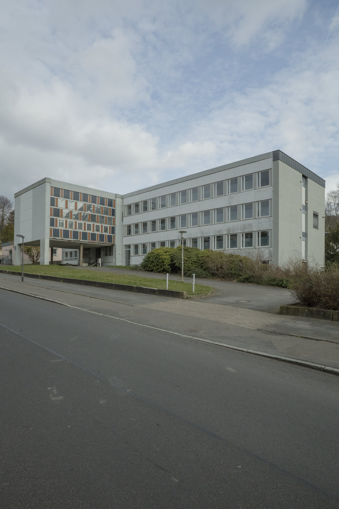
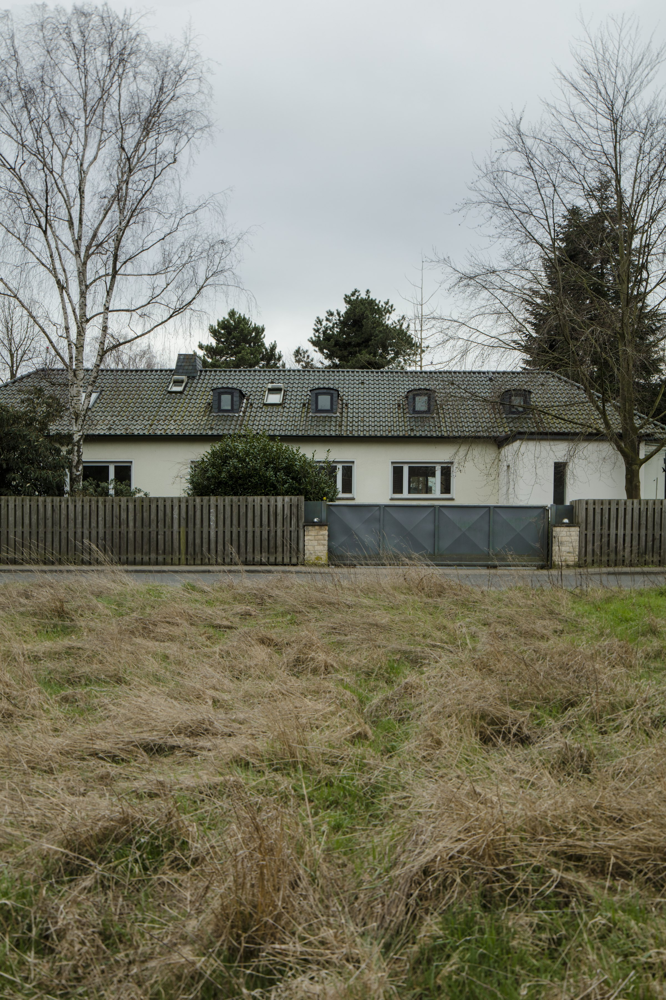
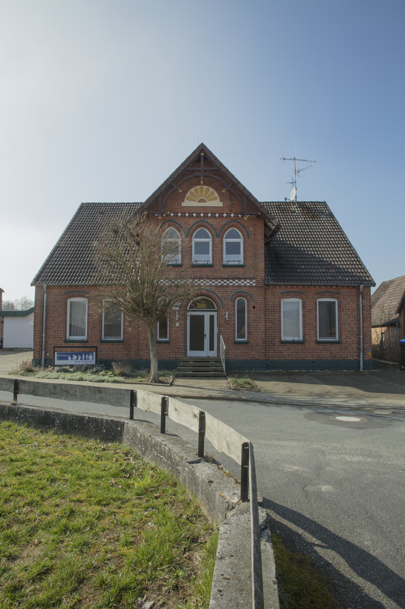
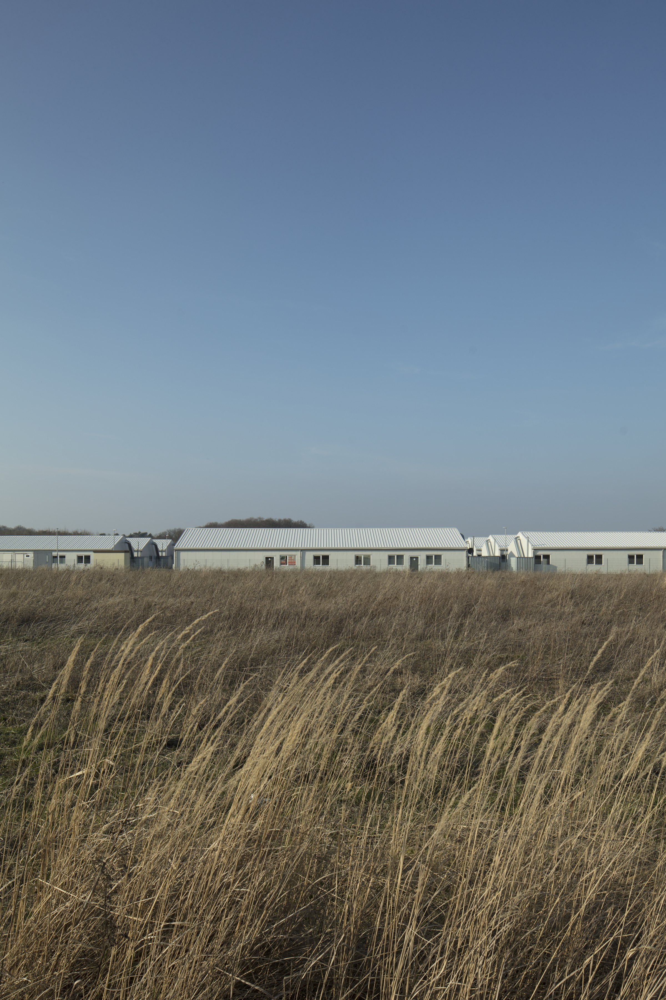

Denied Refuge / Verwehrte Zuflucht
2019 · Photo Series
Denied Refuge / Verwehrte Zuflucht is a photo series by Nickii Schamborski, 2019.





About the work
"Denied Refuge" is the result of research into 25 hidden refugee sites across Lower Saxony, spaces that have been deliberately concealed despite massive public investment. These empty spaces create a portrait of Lower Saxony, revealing how political structures and institutional racism are manifested in the regional infrastructure. Created for the Lower Saxony State Representation, the project presents five sites selected from this documentation. The large-format photographs reveal a bizarre reality: while people endure inhumane conditions in overcrowded camps on Europe's borders, these fully equipped facilities remain deliberately empty. This systematic vacancy does not reflect economic necessity but rather political unwillingness.
Zur Arbeit
Verwehrte Zuflucht ist das Ergebnis einer Recherche zu 25 versteckten Geflüchtetenunterkünften in ganz Niedersachsen: Räume, die trotz massiver öffentlicher Investitionen verborgen werden. Diese leeren Räume bilden ein Portrait Niedersachsens und zeigen, wie sich politische Strukturen und institutioneller Rassismus in der regionalen Infrastruktur manifestieren. Das für die Niedersächsische Landesvertretung konzipierte Projekt zeigt fünf ausgewählte Orte aus dieser Dokumentation. Die großformatigen Fotografien offenbaren eine bizarre Realität: Während Menschen in überfüllten Lagern an den Grenzen Europas unter unmenschlichen Bedingungen leben, bleiben diese voll ausgestatteten Einrichtungen absichtlich leer.
Details
- Year
- 2019
- Type
- Photo Series
- Specs
- Five-part photo series on MDF (2 x 1,3 m)